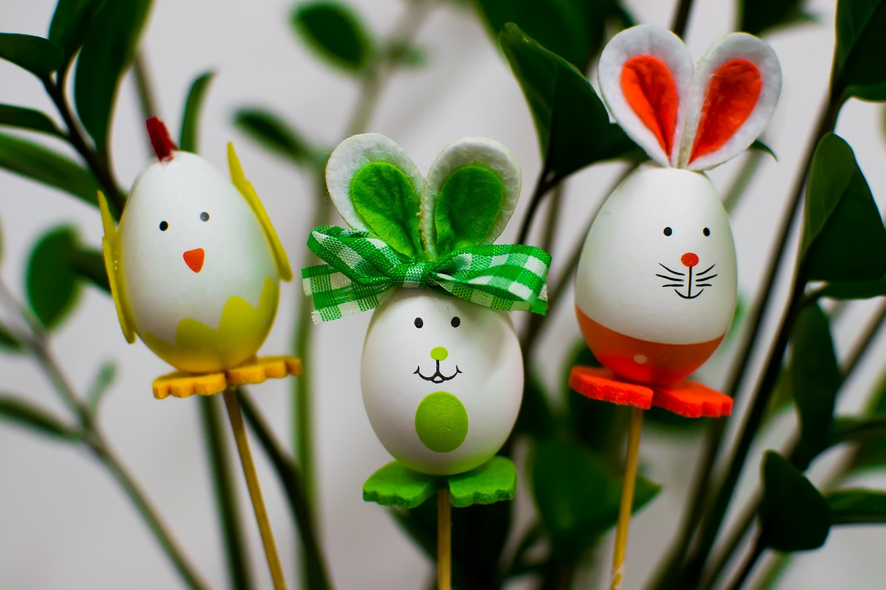

Bastelzauber
Oster Eier Dekoration

Drei Eier
Buntes Tonpapier
Farbe zum anfärben
Eventuell Schleifen zur Dekoration
3x Dünner Strohhalm, etwa 15 Centimeter
Schere
Pinsel
Karton für die Füsse
Buntes Papier
Bastelkleber
Anleitung
Nehmen sie die drei Eier und zeichnen Sie ihnen Gesichter ihrer Wahl darauf. (Mit einem Pinsel oder auch mit einem Fineliner)
Schneiden sie mit dem Karton Füsse aus und pinseln sie die Füsse nach ihrer Wahl an
Mit dem Kleber, kleben sie die Füsse jeweils an die Eier
Danach kleben sie die Eier an die Strohalme
Schneiden sie mit buntem Tonpapier Ohren.
Kleben sie die Ohren mit dem Bastelkleber an die Hasen
Optional können sie Beispielsweise Schleifen an die Hasen befestigen
In diesem Projekt können sie Dekohasen basteln, welches Sie an ihre Pflanzen in die Erde reinsetzen können, um hoffentlich einen frohen Ostern zu haben.